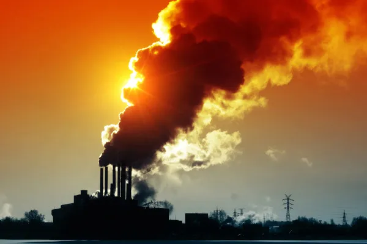

O que é ebulição global?
Ebulição global é um termo utilizado para descrever o atual estágio de mudanças climáticas pelo qual o planeta Terra tem passado, marcado pela aceleração do aquecimento global. A expressão “ebulição global” foi utilizada pelo secretário-geral da Organização das Nações Unidas, António Guterres, ao comentar a respeito do mês de julho mais quente já registrado na história, e que aconteceu no ano de 2023. A era da ebulição global, conforme apelidada por Guterres, indica um período de intensificação sem precedentes do aquecimento global e de extrema preocupação com relação ao futuro da população mundial e, principalmente, da manutenção do nosso planeta.
Causas da ebulição global
A ebulição global é causada pelo aumento acelerado das temperaturas médias do planeta Terra, ou seja, pela intensificação do fenômeno que conhecemos como aquecimento global. A manutenção de uma matriz energética baseada em combustíveis fósseis, como o petróleo e o carvão mineral, e a consequente emissão de gases poluentes da atmosfera pelas indústrias e pelos veículos a combustão (como carros, ônibus, caminhões e outros) são os fatores que contribuem em maior escala para a intensificação do efeito estufa e, assim, para a elevação da temperatura média terrestre. Não somente isso, mas também a intervenção direta dos seres humanos na natureza, como através das queimadas e da prática do desmatamento, contribui para o efeito estufa e para o agravamento das mudanças climáticas considerando a forma como a expressão foi cunhada, podemos dizer que a ebulição global foi provocada pela falta de ações eficazes no controle do aquecimento global. Assim sendo, as mudanças climáticas não foram mitigadas ou amenizadas no tempo necessário para que a situação não se tornasse muito grave, como agora.
Características da ebulição global
A ebulição global é caracterizada pela maior frequência no acontecimento de fenômenos climáticos e atmosféricos extremos, sendo o principal exemplo as ondas de calor muito intensas que aconteceram em diversas partes do mundo no mês de julho de 2023 e o forte El Niño que se formou entre o final de julho e agosto, que trouxe, igualmente, tempo muito quente e muito seco em várias regiões do planeta, em especial no continente americano. Portanto, além das temperaturas atmosféricas, as temperaturas das águas oceânicas estão mais elevadas do que o normal. Segundo a National Geographic|1| , a temperatura média do planeta Terra chegou a 17º C nesse período, um recorde registrado para o mês de julho desde o início das medições, que se deu em 1979. O recorde anterior era de 16,9º C, atingido em 2016. O cálculo da temperatura média global é feito com base em dados de mais de 20 mil estações meteorológicas espalhadas por todo o mundo.
Consequências da ebulição global
A ebulição global acendeu o alerta de autoridades e pesquisadores em todo o mundo, porque as suas consequências podem ser devastadoras caso a situação não seja controlada a tempo. Os eventos extremos se tornarão recorrentes, e os fenômenos associados a eles tendem a seguir pelo mesmo caminho. Mais uma vez, as ondas de calor e de tempo seco que atingiram o planeta em 2023 provocaram grandes incêndios florestais, como aconteceu no estado norte-americano do Havaí. Em linhas gerais, a ebulição global provoca aceleração nas mudanças climáticas em curso. Nesse sentido, são consequências da ebulição global: maior frequência de ondas de calor; intensificação do derretimento das geleiras e calotas polares; aumento do nível dos oceanos; ocorrência de queimadas e incêndios florestais; aumento da temperatura dos oceanos; perda da biodiversidade terrestre e marinha; chuvas muito intensas, volumosas e concentradas; grandes enchentes e inundações; recorrência de fenômenos como furacões e ciclones extratropicais; estiagens prolongadas e tempo muito seco. Possíveis medidas para evitar a ebulição global Apesar de já termos atingido a era da ebulição global, António Guterres afirma que ainda há chances de desacelerar a elevação das temperaturas terrestres e evitar as suas consequências mais danosas. Não chegamos, ainda, no que pode ser chamado de “ponto de não retorno”. Para isso, são necessárias ações urgentes, especialmente em se tratando das maiores economias do mundo, que são aquelas que integram o grupo do G20. Uma dessas medidas seria a transição de uma matriz energética dependente dos combustíveis fósseis para uma matriz limpa e renovável, visando à completa substituição das fontes poluentes até o ano de 2040. Além disso, é importante que as indústrias e as grandes empresas realizem essa mudança e adotem a política de emissões líquidas nulas (net-zero) como uma forma de compensação.